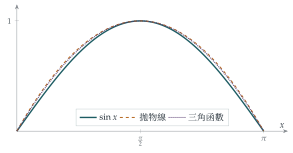

STEP II 2014，第 2 題
繼續之前，請先閱讀題目（原題為英文）。題目載於 STEP Support Programme 的題目資料庫： step.maths.org/questions/14-s2-q2
引子
每個中學生都知道 \(\pi\) 比 \(3\) 大一點。但你會怎樣證明它的一個上界（upper bound）呢？阿基米德（Archimedes）用的是多邊形。這道題的做法卻完全出人意表：取一條關於函數的一般不等式，代入一條簡單的拋物線（parabola），便直接讀出 \(\pi^2 \leq 10\)。換另一個函數，更可得出著名的近似值 \(\pi \leq \frac{22}{7}\)。
不等式 \((*)\) 稱為Wirtinger 不等式（Wirtinger’s inequality）。它說的是：一個兩端都固定為零的函數，不可能只「大」而不「陡」。它的背後是數學物理中最核心的思想之一：弦的振動、量子粒子的能級，以及特徵值（eigenvalue）理論。
動筆之前
一個在 \([0, \pi]\) 兩端都為零的函數，如果在中間取值很大，為甚麼就必須很陡？條件 \(\mathrm{f}(0) = \mathrm{f}(\pi) = 0\) 為甚麼重要？
要在長度為 \(\pi\) 的距離之內，由 \(0\) 升到某個高度 \(H\) 再降回 \(0\)，函數上升的平均速率至少要有 \(H/(\pi/2)\)。因此它的導數（derivative）不可能處處都小。若沒有兩端的條件，就沒有這種限制：常數函數可以任意大，而導數為零。不等式 \((*)\) 把這個想法精確化，以平方的積分（integral）來量度「大小」和「陡峭程度」。
逐步解題
階段 1 正弦波
\(\int_0^\pi \sin^2 nx\,\mathrm{d}x\) 等於甚麼？\(\int_0^\pi \cos^2 nx\,\mathrm{d}x\) 呢？（利用 \(\sin^2\theta = \frac12(1 - \cos 2\theta)\)。）
兩者都等於 \(\frac\pi2\)，因為 \(\int_0^\pi \cos 2nx\,\mathrm{d}x = 0\)。取 \(\mathrm{f}(x) = \sin nx\)，則 \(\mathrm{f}'(x) = n\cos nx\)，所以 \[\int_0^\pi \mathrm{f}^2 = \frac\pi2 \leq \frac{n^2\pi}{2} = \int_0^\pi (\mathrm{f}')^2,\] 因為 \(n \geq 1\)。■ 留意 \(n = 1\) 時等號成立，所以這條不等式已經緊得不能再緊。
階段 2 端點條件不可或缺
找一個簡單的函數，滿足 \(\mathrm{f}(0) \neq 0\)，而 \((*)\) 對它不成立。然後再找一個滿足 \(\mathrm{f}(0) = 0\) 但 \(\mathrm{f}(\pi) \neq 0\) 的。
常數函數 \(\mathrm{f}(x) = 1\) 有 \(\mathrm{f}(0) = 1 \neq 0\)，而且 \(\int_0^\pi 1\,\mathrm{d}x = \pi > 0 = \int_0^\pi 0\,\mathrm{d}x\)。
至於第二個，\(\mathrm{f}(x) = x\) 有 \(\mathrm{f}(0) = 0\) 但 \(\mathrm{f}(\pi) = \pi\)，而且 \[\int_0^\pi x^2\,\mathrm{d}x = \frac{\pi^3}{3} \approx 10.3 > \pi = \int_0^\pi 1^2\,\mathrm{d}x.\] 所以 \((*)\) 在兩種情況下都不成立。■
階段 3 拋物線
哪個二次函數在 \(x = 0\) 和 \(x = \pi\) 處都等於零？（若不計常數倍，就只有一個。為甚麼這個倍數無關緊要？）
這個二次函數必定是 \(x(\pi - x)\) 的倍數，而把 \(\mathrm{f}\) 乘以常數 \(k\)，\((*)\) 的兩邊都會乘以 \(k^2\)，所以我們可以取 \(\mathrm{f}(x) = x(\pi - x)\)，即 \(a = -1\)、\(b = \pi\)、\(c = 0\)。於是 \(\mathrm{f}'(x) = \pi - 2x\)，再用代換（substitution）\(u = x - \frac\pi2\)（這樣兩個被積函數都變成偶函數）， \[\begin{aligned} \int_0^\pi x^2(\pi - x)^2\,\mathrm{d}x &= \int_{-\pi/2}^{\pi/2} \left( \frac{\pi^2}{4} - u^2 \right)^2 \mathrm{d}u = \frac{\pi^5}{30}, \\ \int_0^\pi (\pi - 2x)^2\,\mathrm{d}x &= \int_{-\pi/2}^{\pi/2} 4u^2\,\mathrm{d}u = \frac{\pi^3}{3}. \end{aligned}\] （第一個積分：\(\int_{-h}^{h}(h^2 - u^2)^2\,\mathrm{d}u = 2\bigl(h^5 - \frac23 h^5 + \frac15 h^5\bigr) = \frac{16}{15}h^5\)，其中 \(h = \frac\pi2\)。）所以 \((*)\) 給出 \(\frac{\pi^5}{30} \leq \frac{\pi^3}{3}\)，即 \[\pi^2 \leq 10. \qed\]
階段 4 三角函數的選擇
對於 \(\mathrm{f}(x) = p\sin\frac12 x + q\cos\frac12 x + r\)，\(\mathrm{f}(0) = 0\) 和 \(\mathrm{f}(\pi) = 0\) 對 \(p\)、\(q\)、\(r\) 施加了甚麼條件？
\(\mathrm{f}(0) = q + r = 0\) 及 \(\mathrm{f}(\pi) = p + r = 0\)。所以 \(p = q = -r\)，經縮放後，我們取 \(\mathrm{f}(x) = \sin\frac x2 + \cos\frac x2 - 1\)。
對這個函數計算 \(\int_0^\pi \mathrm{f}^2\) 和 \(\int_0^\pi (\mathrm{f}')^2\)。由此得出關於 \(\pi\) 的甚麼不等式？
記 \(s = \sin\frac x2\) 及 \(c = \cos\frac x2\)。則 \((s + c)^2 = 1 + 2sc = 1 + \sin x\)，所以 \[\mathrm{f}^2 = (s + c)^2 - 2(s + c) + 1 = 2 + \sin x - 2\sin\tfrac x2 - 2\cos\tfrac x2.\] 利用 \(\int_0^\pi \sin x = 2\)、\(\int_0^\pi \sin\frac x2 = 2\) 及 \(\int_0^\pi \cos\frac x2 = 2\)， \[\int_0^\pi \mathrm{f}^2\,\mathrm{d}x = 2\pi + 2 - 4 - 4 = 2\pi - 6.\] 另外 \(\mathrm{f}' = \frac12(c - s)\)，所以 \((\mathrm{f}')^2 = \frac14(1 - \sin x)\)，而 \(\int_0^\pi (\mathrm{f}')^2\,\mathrm{d}x = \frac14(\pi - 2)\)。於是 \((*)\) 給出 \[2\pi - 6 \leq \frac{\pi - 2}{4} \quad\Longrightarrow\quad 8\pi - 24 \leq \pi - 2 \quad\Longrightarrow\quad \pi \leq \frac{22}{7}. \qed\]
階段 5 哪個較好？
由 \(\pi \leq \frac{22}{7}\) 可得 \(\pi^2 \leq \frac{484}{49} \approx 9.878\)，比 \(\pi^2 \leq 10\) 更好。（真實值是 \(\pi^2 \approx 9.870\)。）留意這裏證明的是 \(\frac{22}{7}\) 為 \(\pi\) 的一個上界；而 第 4.3 節 中一個截然不同的積分，則證明它並不等於 \(\pi\)。
回顧
一般的不等式，特定的函數。選定一個測試函數（test function），就把一個關於所有函數的命題，變成一個關於某個數的命題。
縮放。\((*)\) 的兩邊按同一個因子縮放，所以在每一族函數中，我們都可以把那個自由常數固定下來。
測試函數愈好，界愈好。測試函數愈接近極端情況 \(\sin x\)，不等式就愈接近等式，估計也就愈準確（圖 3.7.1）。

背後的數學
為甚麼 \((*)\) 成立？到了大學你會學到，\([0, \pi]\) 上任何在兩端都為零的合理函數，都可以寫成傅立葉正弦級數（Fourier sine series）： \[\mathrm{f}(x) = b_1\sin x + b_2\sin 2x + b_3\sin 3x + \cdots.\] 由於當 \(m \neq n\) 時 \(\int_0^\pi \sin mx\sin nx\,\mathrm{d}x = 0\)，平方後再積分，所有交叉項都會消失，得出 \[\int_0^\pi \mathrm{f}^2 = \frac\pi2\bigl(b_1^2 + b_2^2 + b_3^2 + \cdots\bigr), \qquad \int_0^\pi (\mathrm{f}')^2 = \frac\pi2\bigl(1^2 b_1^2 + 2^2 b_2^2 + 3^2 b_3^2 + \cdots\bigr).\] 右式的每一項都不小於左式的對應項，這就證明了 \((*)\)，同時說明等號只在 \(\mathrm{f}\) 是 \(\sin x\) 的倍數時成立。題目的第 (i) 部分就是只有一項的情況。
振動的弦與量子粒子
比值 \(\int (\mathrm{f}')^2 \big/ \int \mathrm{f}^2\) 稱為瑞利商（Rayleigh quotient），而 \((*)\) 說的是：對於固定在 \(0\) 和 \(\pi\) 的函數，它的最小可能值是 \(1\)。這個數有物理意義。對一條兩端固定的弦來說，\(\int (\mathrm{f}')^2\) 量度拉伸的能量，\(\int \mathrm{f}^2\) 量度位移的大小，而這個比值的最小值決定了弦所能奏出的最低音。在量子力學（quantum mechanics）中，同一個最小值就是困在盒子裏的粒子的最低能量：它不可能是零，因為兩端固定的波必須彎曲。瑞利勳爵（Lord Rayleigh）正是用這一招——猜一個測試函數，再計算比值——來估計振動系統的頻率；由於極端情況給出最小值，任何猜測都會給出真正最低頻率的一個上界，而好的猜測更會給出非常準確的上界。
變分法
找出令某個積分之比取得最小值的函數，是變分法（calculus of variations）的問題，當中的未知量是整個函數，而不是一個數。這裏取得最小值的函數 \(\sin x\) 滿足微分方程（differential equation）\(\mathrm{f}'' + \mathrm{f} = 0\)，而這並非巧合：求積分的最小值，總會導出一條由取得最小值的函數所滿足的微分方程。我們會在 第 4.7 節 再談這個想法。
思維技巧
一條對某類函數中每一個都成立的不等式，可以套用在一個巧妙選取的函數上，從而得到關於某個特定數的資訊。
箇中藝術在於選擇：接近極端情況的測試函數，會給出近乎最佳的結果。這個想法貫穿分析學、物理學和工程學，由估計特徵值到有限元法（finite element method）皆然。
延伸練習
四次函數。在 \((*)\) 中取 \(\mathrm{f}(x) = x^2(\pi - x)^2\)。證明它只能給出 \(\pi^2 \leq 12\)。為甚麼這個測試函數比拋物線差？（把它的形狀與 \(\sin x\) 比較。）
兩個正弦波。對 \(\mathrm{f}(x) = \sin x + \sin 2x\) 直接驗證 \((*)\)，把兩邊都計算出來。
另一個區間。用代換證明：若 \(\mathrm{g}(0) = \mathrm{g}(L) = 0\)，則 \(\displaystyle\int_0^L \mathrm{g}^2 \leq \frac{L^2}{\pi^2}\int_0^L (\mathrm{g}')^2\)。這對不同長度的弦說明了甚麼？
瑞利法。 較難 取 \(\mathrm{f}(x) = x(\pi - x) + \lambda x^2(\pi - x)^2\)，並選取 \(\lambda\) 使 \(\pi^2\) 的界盡可能好。（代數運算相當繁重，用電腦代數系統會有幫助。）
延伸閱讀
T. W. Körner, Fourier Analysis（Cambridge University Press）。一本精彩而旁徵博引的書，講述傅立葉級數及其應用，作者是劍橋的分析學家。
Hardy, Littlewood & Pólya, Inequalities（Cambridge University Press）。第 7 章討論 Wirtinger 不等式及相關的不等式。
Richard Feynman, The Feynman Lectures on Physics，第 II 卷第 19 章（「The principle of least action」，最小作用量原理）。費曼（Feynman）關於求積分最小值的一講，通篇貫穿物理直覺。可於網上免費閱讀。